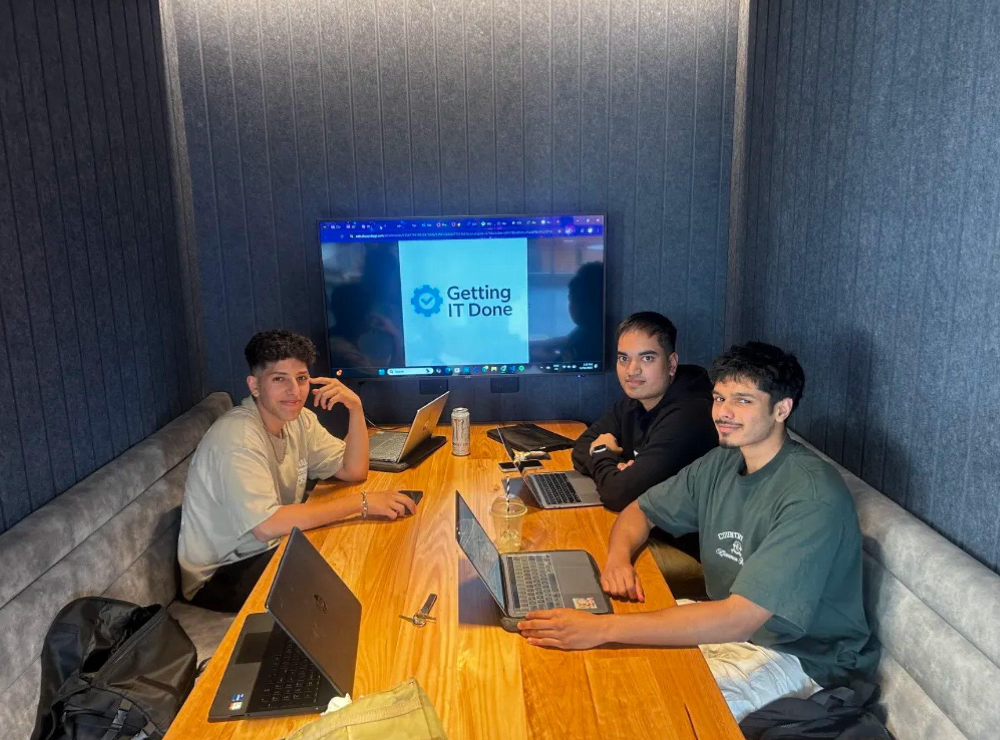

Group Details
- Group Name: Gettin It Done
- Who is our tutor you might ask??
- The goat himself NICK aka The G.O.A.T
- What Class are we from?
- Nick's Thursday Class
- 2:30pm-4:30pm
Our Jira Project

Team Members
- Member 1: Artin Foroughshams
- Student ID - 105337088
- Member 2: Nashwan Name
- Student ID - 104514657
- Member 3: Arjun Sivaraj
- Student ID - 105882355
Meet the Team

Demographic Info: 19 year old studen from with a middle eastern background. Future Cyber Security Analyst.
Hometown:I live in Berwick, a popular town on the South-East side of Victoria
About ME: My favourite movie is Spider-Man 2, my favourite artist is Travis Scott and Kanye(Pre-going crazy) and I love going to gym as it's a nice escape from reality.
Demographic Info: Im 20 years old and I am from Coburg, Victoria.
Hometown: Coburg, Victoria
About ME: I like to play video games, and watch movies. Spider-Man is my favourite video game and movie!
Demographic Info:I am 24 years old and I am from Templestowe Lower
Hometown:Templestowe Lower, Victoria
About ME:-I like listening to music and JDM cars. My favourite music genres are Hardstyle and Techno and I drive a 2003 WRX STI.
Demographic Info: From Anywhere across the Globe--We LOVE diversity and different cultures!!!
Hometown: No matter where you are you can still apply and get a fantastic position at "Gettin IT Done"!
About YOU:We would love to know more about you and your interests as you will be an extremely valuable member of our family
Role Breakdown
- Artin - HTML Layout and Structure
- Arjun - Job Description Content
- Nashwan - Form Design and Validation